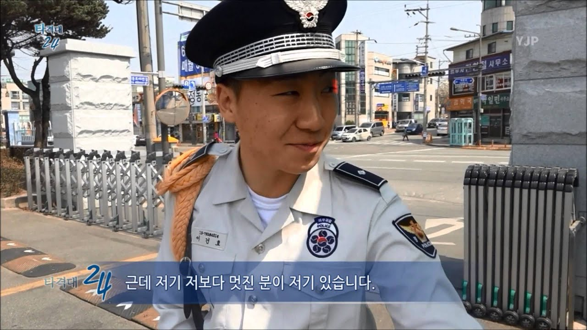

Alternative Military service
riot police
security patrol
rapid reaction team
112 타격대란?
Auxilary Police
is a kind of
alternative military service
in korea.
112 타격대는 공익새끼들과 다를 게 없다. 솔직히 육해공에 비하면 개꿀이긴 한데 이샛기들은 진짜 어디가서 지들이 개고생했다고 하면 대가리를 부숴버려야 한다.
